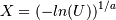
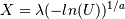
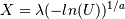
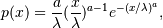
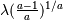
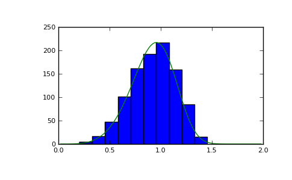

numpy.random.weibull¶
- numpy.random.weibull(a, size=None)¶
Weibull distribution.
Draw samples from a 1-parameter Weibull distribution with the given shape parameter a.

Here, U is drawn from the uniform distribution over (0,1].
The more common 2-parameter Weibull, including a scale parameter
 is just .
is just .Parameters : a : float
Shape of the distribution.
size : tuple of ints
Output shape. If the given shape is, e.g., (m, n, k), then m * n * k samples are drawn.
See also
scipy.stats.distributions.weibull_max, scipy.stats.distributions.weibull_min, scipy.stats.distributions.genextreme, gumbel
Notes
The Weibull (or Type III asymptotic extreme value distribution for smallest values, SEV Type III, or Rosin-Rammler distribution) is one of a class of Generalized Extreme Value (GEV) distributions used in modeling extreme value problems. This class includes the Gumbel and Frechet distributions.
The probability density for the Weibull distribution is

where is the shape and
the scale.The function has its peak (the mode) at .
When a = 1, the Weibull distribution reduces to the exponential distribution.
References
[R238] Waloddi Weibull, Professor, Royal Technical University, Stockholm, 1939 “A Statistical Theory Of The Strength Of Materials”, Ingeniorsvetenskapsakademiens Handlingar Nr 151, 1939, Generalstabens Litografiska Anstalts Forlag, Stockholm. [R239] Waloddi Weibull, 1951 “A Statistical Distribution Function of Wide Applicability”, Journal Of Applied Mechanics ASME Paper. [R240] Wikipedia, “Weibull distribution”, http://en.wikipedia.org/wiki/Weibull_distribution Examples
Draw samples from the distribution:
>>> a = 5. # shape >>> s = np.random.weibull(a, 1000)
Display the histogram of the samples, along with the probability density function:
>>> import matplotlib.pyplot as plt >>> x = np.arange(1,100.)/50. >>> def weib(x,n,a): ... return (a / n) * (x / n)**(a - 1) * np.exp(-(x / n)**a)
>>> count, bins, ignored = plt.hist(np.random.weibull(5.,1000)) >>> x = np.arange(1,100.)/50. >>> scale = count.max()/weib(x, 1., 5.).max() >>> plt.plot(x, weib(x, 1., 5.)*scale) >>> plt.show()
(Source code, png, pdf)

{kind=link}